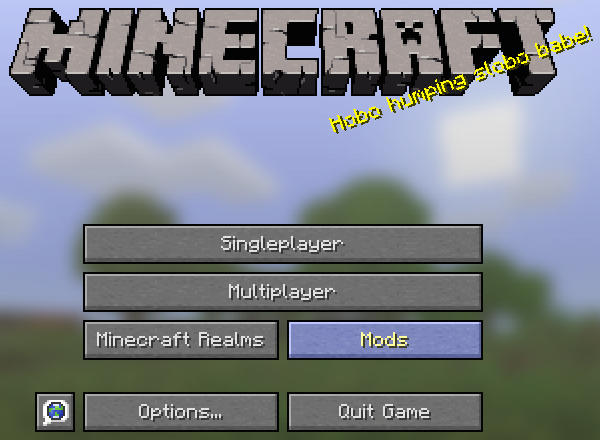

Caveworld 2
洞窟の明るさのコンフィグの追加、多くの調整を含むアップデートです
2016/03/06更新 : Caveworld 2 が 2.2.6 に更新されました
インフィタイト鉱石、インフィタイト、インフィタイトツールなどの追加を含むアップデートです

Caveworld, Cavern, Aqua Cavern, Caveland, Cavenia の5つの洞窟ディメンションが追加されます。
また、いくつかの鉱石や便利なアイテム、レシピ、モブやボスも追加されます。
導入方法
このMODは、Java 7以降を要求します。
導入前にJavaのバージョンを確認し、必要に応じてJavaの更新を行ってください。
シングルプレイ
前提MODとして、該当のバージョンのMinecraft Forgeを導入してください。なるべく最新のものを利用されることを推奨します。
- リリースから目的のバージョンのMODファイルをダウンロードします。
- ダウンロードしたjarファイルを、解凍せずにそのままmodsフォルダへドラッグアンドドロップしてください。
- Minecraftを起動し、タイトルのModsボタンをクリックしてMODリストを開き、Caveworld 2の存在を確認したら導入成功です。
マルチプレイ サーバーに参加して遊ぶ
- 上記手順を参考に、シングルプレイ用に導入しておきます。
- 目的のサーバーへ接続し、ログインできたなら導入成功です。
マルチプレイ サーバーを構築する
前提MODとして、該当のバージョンのMinecraft Forgeを導入してください。なるべく最新のものを利用されることを推奨します。
- リリースから目的のバージョンのMODファイルをダウンロードします。
- ダウンロードしたjarファイルを、解凍せずにそのままmodsフォルダへドラッグアンドドロップしてください。
- Minecraft Serverを起動し、/caveworld コマンドが使用できれば導入成功です。
コンフィグ
コンフィグGUI
Caveworldでは、コンフィグ項目が非常に多く、テキストエディタでは設定が困難なため、コンフィグ設定用のGUIが用意されています。
タイトル画面のModsボタンを押し、MODリスト画面を開きます。

下の方にスクロールし、Caveworld 2を選択します。

- Configボタンを押すと、Caveworld 2のコンフィグGUIが開きます。
リリース
普通の環境で利用されるユーザーは青いダウンロードボタンからダウンロードしてください。
開発者向けは、MOD製作者のための開発環境用のMODファイルになります。
また、バージョンの後に＋と付いているものは、それ以降のバージョンであれば大丈夫です。
赤く強調表示されたビルドは、重大な不具合を抱えたビルドになります。
黄色く強調表示されたビルドは、一部の環境での重大な不具合を抱えたビルドになります。
特別な事情が無ければそれ以外のバージョンをご利用ください。
| MOD | バージョン | Minecraft | Forge | |
|---|---|---|---|---|
| Caveworld 2 | 2.2.7 | 1.7.10 | 11.13.4.1558+ | |
| Caveworld 2 | 2.2.6 | 1.7.10 | 11.13.4.1558+ | |
| Caveworld 2 | 2.2.5 | 1.7.10 | 11.13.4.1558+ | |
| Caveworld 2 | 2.2.4 | 1.7.10 | 11.13.4.1558+ | |
| Caveworld 2 | 2.2.3 | 1.7.10 | 11.13.4.1558+ | |
| Caveworld 2 | 2.2.2 | 1.7.10 | 11.13.4.1558+ | |
| Caveworld 2 | 2.2.1 | 1.7.10 | 11.13.4.1558+ | |
| Caveworld 2 | 2.2.0 | 1.7.10 | 11.13.4.1558+ | |
| Caveworld 2 | 2.1.9 | 1.7.10 | 11.13.4.1558+ | |
| Caveworld 2 | 2.1.8 | 1.7.10 | 11.13.4.1558+ | |
| Caveworld 2 | 2.1.7 | 1.7.10 | 11.13.4.1558+ | |
| Caveworld 2 | 2.1.6 | 1.7.10 | 11.13.4.1558+ | |
| Caveworld 2 | 2.1.5 | 1.7.10 | 11.13.4.1558+ | |
| Caveworld 2 | 2.1.4 | 1.7.10 | 11.13.4.1558+ | |
| Caveworld 2 | 2.1.3 | 1.7.10 | 11.13.4.1558+ | |
| Caveworld 2 | 2.1.2 | 1.7.10 | 11.13.4.1558+ | |
| Caveworld 2 | 2.1.1 | 1.7.10 | 11.13.4.1558+ | |
| Caveworld 2 | 2.1.0 | 1.7.10 | 11.13.4.1558+ | |
| Caveworld 2 | 2.0.9 | 1.7.10 | 11.13.4.1558+ | |
| Caveworld 2 | 2.0.8 | 1.7.10 | 11.13.4.1558+ | |
| Caveworld 2 | 2.0.7 | 1.7.10 | 11.13.4.1558+ | |
| Caveworld 2 | 2.0.6 | 1.7.10 | 11.13.4.1558+ | |
| Caveworld 2 | 2.0.5 | 1.7.10 | 11.13.4.1558+ | |
| Caveworld 2 | 2.0.4 | 1.7.10 | 11.13.4.1558+ | |
| Caveworld 2 | 2.0.3 | 1.7.10 | 11.13.4.1558+ | |
| Caveworld 2 | 2.0.2 | 1.7.10 | 11.13.4.1558+ | |
| Caveworld 2 | 2.0.1 | 1.7.10 | 11.13.4.1558+ | |
| Caveworld 2 | 2.0.0 | 1.7.10 | 11.13.4.1558+ |
ベータ
現在公開されているリリース直前のビルドはありません。
アルファ
現在公開されている開発段階のビルドはありません。
ライセンス
- このMODを導入したことであなたになんらかの損害が生じたとしても、製作者は一切の責任の負わないものとします。
- このMODをあなたは自由に再配布することができます。
MODパックに含める際にも許可を取る必要はありません。 - このMODをあなたは自由に改変することができます。
ただし、改変されたものを公開する場合は、同じくMMPL_J ライセンスが適用されるものとします。 - このMODを含めた動画・生放送をあなたは自由に配信することができます。
事前に許可を取る必要はありません。 - このMODを営利目的で利用することはできません。
特別な事情がある場合、事前に製作者に相談してください。 - このMODのリソースファイルには、CC-BY-NC ライセンスが適用されます。
このMODのライセンスには、MMPL_Jが適用されます。
ライセンス条文をご理解・同意いただいた上でご使用ください。
MMPL_Jは、MMPLの日本語訳のライセンスになります。